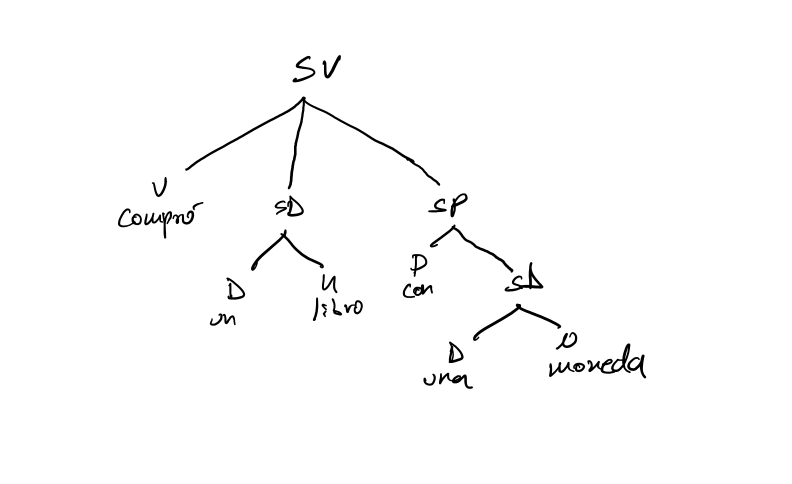

Handout 6: Más sintagmas
El Sintagma Adjetival (SAdj)
- La película es [larga]
- La película es [muy larga]
- [Larga] es la película.
- [Muy larga] es la película.
El Sintagma Adverbial (SAdv)
- Juan salió [lentamente]
- Juan salió [bastante lentamente]
- Juan salió [lentamente]
- [Lentamente] salió Juan.
- [Bastante lentamente] salió Juan.
- lentamente.png)
Pruebas de constituyente
- El movimiento (o el desplazamiento) es lo que llamamos una prueba de constituyente.
- Un constituyente es un grupo de palabras que se porta como una unidad sintáctica. A estas unidades, les ponemos etiquetas como SD, SN, SAdj, SAdv, y como veremos más abajo, SV.
- Es decir, los nodos y todo debajo de los nodos forman un constituyente.
Una pregunta: ¿Por qué podemos mover SDs, SNs, etc?
Respuesta: Porque son constituyentes.
- En este sentido el movimiento es una prueba de constituyente. Y hay más pruebas.
La sustitución
El SD
- Cuándo un proforma sustituye una secuencia de palabra y resulta en el mismo significado, esta secuencia de palabras forman un constituyente.
- Juan se bebió [mi cerveza].
- [Mi cerveza], se bebió Juan.
- Ahora, considera las siguientes oraciones.
- Juan se bebió mi cerveza.
- La compré yo.
- Me costó mucho.
Decimos que la en (8b) y el sujeto nulo en (8c) sustituye “mi cerveza” ya que se refieren a “mi cerveza”.
Sintácticamente, estos pronombres sustituyen el nodo SD
El SAdj y el SAdv
- Considera el SAdj en (9).
- Esta película es [muy larga]
- Aquella lo es también.
- Esta es así también.
Una pregunta: ¿Qué sustituye lo en (9b) y así en (9c)? ¿Es decir, que significan lo en (9b) y así en (9c)
- Considera el SAdv en (10).
- Juan salió [bastante lentamente]
- María salió así también.
- Juan salió [bastante lentamente]
Una pregunta: ¿Qué sustituye así en (10b)? ¿Es decir, que significa así en (10b)
La coordinación
- Considera las oraciones en (11) en que aparecen las coordinaciones y, ni, y pero
- Tomas se comió una manzana y un queso.
- La mesa pequeña y la silla con ruedas tienen que venderse.
- Susana hizo los deberes muy rápidamente y bastante bien.
- Curiosamente, contestó la pregunta bien y mal.
- El edificio no es muy alto ni muy lujoso.
- Un perro sucio pero simpático durmió en mi garaje.
Actividad: Subraya las secuencias de palabras que están coordinadas en (11).
Pregunta: ¿Son constituyentes lo que coordinan y, ni y pero?
El sintagma verbal
Una actividad en clase: Considera las oraciones en (12) a (13) con el proforma “hacerlo”.
- Carlos canta.
- Consuelo lo hace también.
- Laura nada.
- Pedro lo hace también.
- Laura nada.
Pregunta 1: ¿Qué sustituye hacerlo en (12b) y en (13b)?
- Ahora, considera las oraciones en (14) a (16).
- María corrió el maratón rápidamente.
- Josefina lo hizo también.
- María corrió el maratón rápidamente.
- Juana construyó una casa en un año.
- Carla lo hizo también.
- Jorge abrió la puerta con una llave.
- Juan lo hizo también.
- Jorge abrió la puerta con una llave.
Actividad: Subraya las palabras que sustituye hacerlo en (14) a (16).
Actividad: En grupos crea oraciones empleando la coordinación para demostrar que las secuencias de palabras subrayadas en (14) a (16) son constituyentes.
Los modificadores
- Considera el comportamiento de los modificadores de los Ns, Adjs, Advs, y Vs subrayados y las oraciones en (18).
Nota: Estamos observándolos para sacar una regla sintáctica sobre los modificadores.
- Hay un pájaro bonito y un gusano feo en mi jardín.
- Juan canta bien pero baila mal.
- Hay un pájaro bonito y un gusano feo en mi jardín.
Pregunta 1: ¿Por qué en (18a) feo no puede modificar pájaro, y bonito no puede modificar gusano? ¿Por qué bonito solo puede modificar pájaro, y feo solo puede modificar gusano? ¿Por qué en (18b) mal no puede modificar cantar, y bien no puede modificar baila? ¿Por qué bien solo puede modificar cantar, y mal solo puede modificar bailar?
Es decir: ¿Qué conclusión podemos sacar sobre la relación sintáctica entre los modificadores, los elementos modificados y los sintagmas?
¿Dónde tiene que estar el modificador para modificar otro elemento?
Conclusión:
- Ahora, considera la oración ambigua en (19). Apunta las dos interpretaciones.
- Pedro compró un libro con una moneda.
Interpretación 1:
Interpretación 2:Una pregunta: A base de nuestras conclusiones sobre la relación estructural entre los modificadores y los sintagmas ¿Qué diferencia estructural esperarías entre las dos interpretaciones de la oración ambigua? ¿En qué sintagma estará con una moneda en interpretación 1 y en interpretación 2?
- Principio de modificación: Si un SX (un sintagma con la categoría X, es decir, cualquier categoría) modifica otro SY, SX es hijo de SY (y por extensión hermano del núcleo de SY).
Pero ¿Qué significan núcleo, padre, hijo y hermano?
- Definimos estas nociones estructurales a base de los dos árboles que corresponden a las dos interpretaciones de (19), repetido abajo en (20).
Pedro compró un libro con una moneda.

- 
- En (21a), el SP (con una moneda) es hijo de SN (y hermano de N)
- En (21b), el SP (con una moneda) es hijo de SV (y hermano de V)
Actividad: En grupos de 2-3, crea oraciones, empleando las pruebas de constituyentes (el movimiento, la sustitución y la coordinación), que apoya esta conclusión sobre las estructuras distintas de las dos interpretaciones de la oración ambigua.
Practica: Dibuja los árboles para los siguientes sintagmas
- una cerveza
- una bonita historia
- una mujer muy alta
- en la mesa
- para llegar a la hora
- el libro del siglo
- hizo el proyecto lentamente por la mañana
- por hablar mucho
- un joven colombiano
- Juan